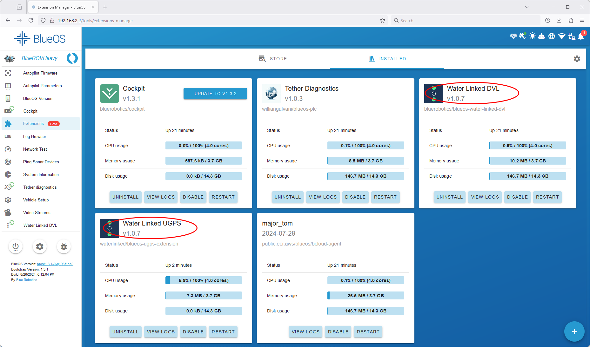
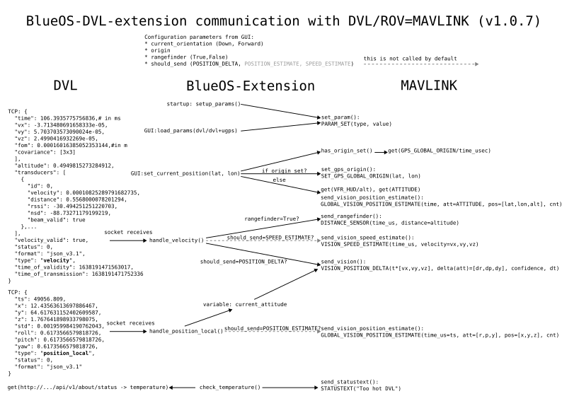

DVL with UGPS for BlueROV2
Optimizing Performance when concurrently using our DVL and UGPS Systems🔗
Capabilities of the DVL as a Standalone System🔗
The Water Linked DVL can provide accurate velocities relative to the seabed. It has a relatively high update rate and dynamic. For the calculation of an absolute position, the velocities have to be integrated over time with the help of inertial measurement unit (IMU) data. Furthermore, the user has to specify a starting position of this dead-reckoning-algorithm. Alternatively a normal GPS can be used to initialize the position prior to a dive.
One advantage of using a DVL only is that no infrastructure outside the ROV (such as antennas, beacons, etc.) is needed. As a downside, small errors in sensor values accumulate over time and the position estimate drifts from the actual position. A typical use case for the DVL is station keeping even in water currents. It also helps to track the approximate ROV position on a map and enables simple autonomous missions.
Capabilities of the Underwater GPS as a Standalone System🔗
The Water Linked Underwater GPS is able to provide an absolute position below water. It is based on the combination of a standard GPS to measure the Topside position and the Short Baseline (SBL) acoustic positioning to determine the ROV/locator position relative to the Topside.
The characteristic of this combined position estimate is that it is global, with little to no drift over time under the right conditions. The update rate is in general lower compared to the DVL. A typical use case for using the Underwater GPS by itself is to visualize the ROV position on a map for manual control and finding a specific geolocation below water.
Enhanced Functionality with Combined DVL and UGPS Integration🔗
When both sensor types are combined in a good manner they can compensate each other's weak sides. For instance the UGPS helps to compensate for the position drift of the DVL over time. The DVL on the other hand increases the update rate of the position, which is necessary for better control. This is particularly useful if you want to use the positioning not only for visualization during manual operation or position holding but longer autonomous missions (e.g. waypoint navigation). Below section "Mode DVL+UGPS" describes how to enable this in the BlueROV control system.
Mode "DVL+UGPS": Fusing the data of Underwater GPS and DVL for a position estimate of the BlueROV🔗
The BlueROV uses a highly-customizable autopilot Ardusub. One part of that autopilot is an Extended Kalman filter, which is able to combine inputs from all types of sensors (gyroscope, accelerometer, compass, pressure sensor, GPS, DVL, etc.) to calculate a position estimate. This is then used to either simply show the position on a map in manual mode or as part of a feedback loop to actively control the ROV. This data fusion algorithm is not part of a Water Linked product but is executed in the BlueROV control system. So the user is in full control of the parameters and used algorithm.
Before successful sensor fusion of Underwater GPS and DVL the following conditions must be met:
- A BlueROV running BlueOS with a version 1.1.0 (stable) or newer.
- The DVL is installed, configured and tested successfully. Guides can be found here and on the Blue Robotics website
- Make sure you are running version 1.0.7 or newer of the BlueOS Water Linked DVL extension. The extension version can be checked / updated in BlueOS by going to Extensions > Installed. The version is shown next to the extension name, see below figure.

- The Underwater GPS is installed, configured and tested successfully. The latest UGPS integration-guide can be found here.
- Make sure you are running version 1.0.7 or newer of the BlueOS Water Linked UGPS extension.
- The accelerometer, gyroscope, compass and pressure sensor must be calibrated: Calibration of all sensors can be performed from QGroundControl. Detailed steps are described in the BlueROV Software Setup
- Make sure that the compass calibration was successful by comparing the ROV orientation shown in the map in QGroundControl to the actual ROV orientation. Land-marks like a coast-line or an analogue compass can help.
Note
When you want to use the position estimate for control of the ROV and the UGPS Topside is on land, it is highly recommended setting up the Underwater GPS to use static position and static heading mode. Alternatively when the UGPS Topside position is not static (on a boat or similar) you need to input heading and position data from an external GPS compass. Details can be found here.
If you don't follow this advice, the position provided by the Underwater GPS will have more noise ("jump" too much) and also drift over time. This might cause the position hold mode to not work properly.
The Underwater GPS together with the BlueOS UGPS extension provide a standard deviation of the global position to the autopilot and the Kalman filter. The Kalman filter uses this standard deviation to weight the provided position in relation to other sensor inputs. The standard deviation is currently optimized for static position and static heading mode.
The steps to enable sensor fusion are:
- To enable fusion of Underwater GPS and DVL, enable both the "Water Linked DVL"-extension and "Water Linked UGPS"-extension in the extensions manager. You see that they are running when an uptime is shown.

- Open the interface of the DVL extension and click the button "Load parameters for DVL+UGPS". This will set parameters for the Kalman filter to consider both sensors. Those parameters are persistent over reboots, which means that this button only needs to be pressed once and not every time you restart the ROV.

- Restart the autopilot for the parameter changes to take effect. It is not necessary to reboot BlueOS.

- If both Underwater GPS and DVL are connected, it is not necessary to set the vehicle position manually in the DVL extension.
Now both sensors should be considered for the position estimate of the ROV. You can test this in a simple way by switching the ROV to position hold mode around close (e.g. 3 m) to the UGPS-antenna and in sight. The ROV should stand still. When you now slowly turn the UGPS antenna, the ROV should follow your rotation.
Alternative mode "DVL only": How to base the ROV position estimate only on the DVL while the Underwater GPS is running🔗
This mode can be useful when you experience issues with sensor fusion (Mode "DVL+UGPS" above) or not all the described conditions in above section are met. Otherwise, we recommend using Mode "DVL+UGPS".
In this configuration the BlueROV will base its position estimate updates on velocity input from the DVL as well as accelerometer, gyroscope, compass and pressure sensor but not the Underwater GPS. Although the Underwater GPS is connected and running it will only be used to initialize the global ROV position at the beginning. QGroundControl (or the new Cockpit) will show the ROV position estimate based on the DVL only while the Underwater GPS GUI will show the position based on the Underwater GPS.
Note
The setup procedure below is very similar to when you only use the DVL without a running Underwater GPS. That case is described here.
- Enable both the "Water Linked DVL"-extension and "Water Linked UGPS"-extension in the extensions manager. You see that they are running when an uptime is shown. Make sure you use the latest versions of both extensions.
- Open the interface of the DVL-extension and click the button "Load parameters for DVL". This will set parameters for the Kalman filter to ignore the Underwater GPS input. Those parameters are persistent over reboots, which means that this button only needs to be pressed once and not every time you restart the ROV.
- Restart the autopilot for the parameter changes to take effect. It is not necessary to reboot BlueOS.
- If both Underwater GPS and DVL are connected, it is not necessary to set the vehicle position manually in the DVL extension.
FAQ for sensor fusion of Underwater GPS and DVL🔗
How do I start an autonomous mission?🔗
Blue Robotics wrote a guide on how to start an autonomous mission with the DVL only. The steps are the same when you use DVL and Underwater GPS together after you followed above guide for Mode "DVL+UGPS".
At the time of writing (November 2024) QGroundControl is still more suited for advanced usage like missions compared to the new Cockpit.
Which mode am I currently using? Is Underwater GPS input enabled for sensor fusion or not?🔗
You can check if the correct parameters are set by navigating to "Autopilot Parameters" in BlueOS. It shows a searchable list of all currently set parameters.
Below table lists both default values of the parameters for two Ardusub versions and which values the DVL extension sets when you click on the respective buttons. The parameter set by the Underwater GPS extension is listed, too.
Parameters can be "not set" which is shown as an empty cell in the table.
| Parameter | Ardusub 4.5.0 default | Ardusub 4.1.2 default | DVL Extension, Mode "DVL+UGPS" | DVL Extension, Mode "DVL only" | UGPS extension |
|---|---|---|---|---|---|
| AHRS_EKF_TYPE | 3 ekf3 | 3 ekf3 | 3 ekf3 | 3 ekf3 | |
| EK2_ENABLE | 0 disabled | 0 disabled | 0 disabled | ||
| EK3_ENABLE | 1 enabled | 1 enabled | 1 enabled | 1 enabled | |
| VISO_TYPE | 1 mavlink | 0 none | 1 mavlink | 1 mavlink | |
| RNGFND1_TYPE | 10 mavlink | 10 mavlink | 10 mavlink | 10 mavlink | |
| EK3_GPS_TYPE | 0 v=3d-pos=2d | 3 no-gps | |||
| EK3_SRC1_POSXY | 3 gps | 3 gps | 3 gps | 6 external-nav | |
| EK3_SRC1_VELXY | 3 gps | 3 gps | 6 external-nav | 6 external-nav | |
| EK3_SRC1_POSZ | 1 baro | 1 baro | 1 baro | 1 baro | |
| GPS_TYPE | 1 auto | 1 auto | 14 mavlink |
Documentation for Ardusub parameters can be found here.
Some parameters in Ardusub require a reboot of the autopilot to take effect while others take effect immediately. If in doubt, reboot the autopilot.
The ROV moves back and forth in position hold mode. What is wrong?🔗
When the ROV holds its position well in mode "DVL only" and starts moving back and forth in mode "DVL+UGPS" this is due to more than expected noise of the UGPS position. Make sure to use static position and heading of the Underwater GPS Topside for best results.
How does the sensor fusion work?🔗
This section is for advanced users and developers who try to understand what happens behind the scenes. It contains links to documentation of the relevant open source projects and describes how Water Linked products interact.
- The DVL and UGPS extensions are sending messages following the mavlink-protocol to the autopilot, e.g. the message GPS_INPUT.
- The ROV-specific autopilot is called Ardusub, which is part of a larger project Ardupilot
- The extended Kalman filter is described in the Ardupilot documentation. The EKF3 implementation is used by default.
- In the current version of Ardusub together with the navigator flight controller only one EKF-lane is used.
How the BlueOS Water Linked DVL extension interacts with the autopilot🔗
- This figure illustrates which events trigger which function calls and which mavlink messages:

-
When the user sets the vehicle location on the extension map the first time, the origin of the autopilot global position estimate is set (SET_GPS_GLOBAL_ORIGIN). When the latter is already set, the position estimate is updated with GLOBAL_VISION_POSITION_ESTIMATE.
-
The main input from the DVL to the autopilot is the mavlink message VISION_POSITION_DELTA. It contains the change of position and attitude since the last message in body frame of the ROV together with the time interval since the last measurement. This corresponds directly to velocities and angular rates. The figure of merit (FOM) provided by the DVL is scaled to a confidence value in percent.
-
The DVL-internal dead-reckoning exposed through the position_local-TCP-packet is currently not used on a BlueROV. A function in the extension is implemented, but it is disabled. So GLOBAL_VISION_POSITION_ESTIMATE messages are sent based on DVL-measurements.
-
The attitude measured by the DVL-IMU (current_attitude) is sent in the VISION_POSITION_DELTA-message. The attitude values sent in VISION_POSITION_DELTA are currently not considered by the Ardusub autopilot.
-
More details can be found in the source code in the GitHub repository.
How the BlueOS Water Linked UGPS extension interacts with the autopilot🔗
This is an overview figure of the sent mavlink messages:

- The main input from the Underwater GPS to the autopilot is the mavlink message GPS_INPUT.
- The GitHub README provides more details.